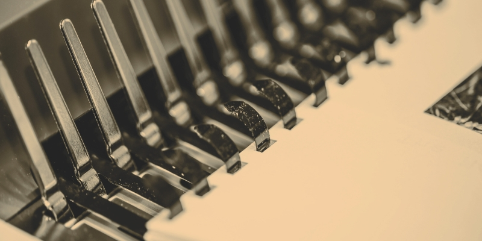

Bindowanie drutowe to nic innego jak technologia introligatorska pozwalająca na łączenie luźnych kartek. Spoiwem pozwalającym stworzyć estetyczny dokument jest binda (drut), która może przybrać między innymi metalowego grzebienia.
4,8 mm – do 15 kartek:
5,00zł6,4 mm – do 40 kartek:
6,00zł8 mm – do 55 kartek:
7,00zł9,5 mm – do 65 kartek
8,00zł11,1 mm – do 80 kartek
9,00zł12,7 mm – do 100 kartek
10,00zł14,3 mm – do 120 kartek
11,00złpowered by wikipedia.org